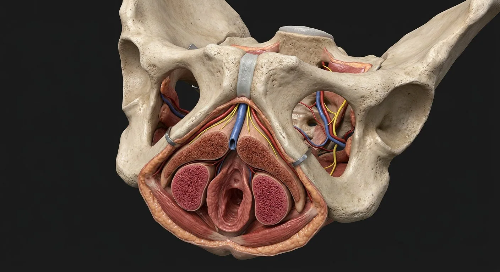

Dorsal clitoral nerveCrura of clitorisRight corpus cavernosumCrural cavernous sinusoidsTunica albugineaDeep clitoral arteryIschiocavernosusDorsal clitoral arteryCavernous autonomic fibersDorsal venous channelVenous drainageVestibular bulbsBulbous venous plexusBulbospongiosusClitoral glansClitoral prepuceSuspensory ligamentLeft corpus cavernosumClitoral septal tissueClitoral body- 01Crura of clitoris
- 02Vestibular bulbs
- 03Clitoral body
- 04Dorsal clitoral nerve
- 05Deep clitoral artery
- 06Bulbospongiosus
- 07Clitoral glans
- 08Clitoral prepuce
- 09Right corpus cavernosum
- 10Left corpus cavernosum
- 11Tunica albuginea
- 12Ischiocavernosus
- 13Suspensory ligament
- 14Cavernous autonomic fibers
- 15Dorsal clitoral artery
- 16Venous drainage
- 17Dorsal venous channel
- 18Crural cavernous sinusoids
- 19Bulbous venous plexus
- 20Clitoral septal tissue
How this part of the body works
The visible glans is not the whole clitoris. Two corpora cavernosa join into a body, while proximal crura anchor to the ischiopubic rami. The glans is particularly sensory and is not simply another corpus cavernosum. Paired vestibular bulbs are neighboring erectile tissue flanking the vestibule, anatomically distinguished from the corpora. Arterial inflow, smooth-muscle relaxation and venous outflow restriction contribute to engorgement; somatic sensation travels largely in the dorsal clitoral nerve.
Read the anatomy, part by part
These 20 structures describe anatomy related to the chapter’s regional illustration. Each entry separates location, function and a clinical point.
Clitoral glans
External distal part beneath or exposed by the hood; dense sensory innervation and distinct histology from cavernous bodies.
What it doesConveys fine sensation.
Clinical connectionDo not describe the glans as a paired cavernous body.
Clitoral prepuce
Fold of skin derived from the anterior labia minora covering part of the glans.
What it doesProtects and permits mobility of glans.
Clinical connectionIts form and degree of coverage vary normally.
Clitoral body
Midline body formed by apposition of the paired corpora cavernosa, deep to the external glans.
What it doesEngorges via cavernous vascular spaces.
Clinical connectionThe externally visible part understates total size.
Right corpus cavernosum
One of the paired erectile cylinders of the clitoral body, enclosed by tunica albuginea.
What it doesFills with blood during arousal.
Clinical connectionSeparate it anatomically from the vestibular bulb.
Left corpus cavernosum
Contralateral cavernous cylinder joining the body along the midline.
What it doesContributes to body rigidity and expansion.
Clinical connectionPaired anatomy can be traced into the crura.
Crura of clitoris
Two proximal cavernous limbs fixed to the inferior pubic and ischial rami.
What it doesAnchor the erectile body to pelvic bone.
Clinical connectionDeep crura cannot be assessed from surface appearance alone.
Vestibular bulbs
Paired spongy masses on either side of vaginal and urethral vestibule, superficial to perineal membrane.
What it doesEngorge and narrow the vaginal opening during arousal.
Clinical connectionThese are related but distinct from clitoral corpora cavernosa.
Tunica albuginea
Fibrous coat around the paired corpora cavernosa.
What it doesContains expansion of cavernous spaces.
Clinical connectionNot the same thin investing tissue as the glans.
Ischiocavernosus
Paired superficial perineal muscles covering each clitoral crus.
What it doesCompress crura and assist venous outflow restriction.
Clinical connectionPudendal motor innervation via perineal branches.
Bulbospongiosus
Paired muscles around the vestibular bulbs and vaginal opening.
What it doesCompresses vestibular bulbs and helps narrow introitus.
Clinical connectionDistinct from deep pelvic-floor levator ani.
Suspensory ligament
Fibrous connection from pubic symphysis to clitoral body.
What it doesSuspends and stabilizes the body.
Clinical connectionA surgical landmark near the dorsal neurovascular bundle.
Dorsal clitoral nerve
Terminal sensory branch of pudendal nerve running dorsolaterally toward body and glans.
What it doesCarries much of clitoral touch sensation.
Clinical connectionPotentially vulnerable in anterior perineal procedures.
Cavernous autonomic fibers
Pelvic plexus fibers reaching erectile tissue through perineal neurovascular pathways.
What it doesRegulate vascular smooth muscle and engorgement.
Clinical connectionNot interchangeable with pudendal somatic sensory fibers.
Deep clitoral artery
Internal pudendal terminal branch entering each cavernosal crus.
What it doesSupplies cavernous erectile tissue.
Clinical connectionPelvic arterial branching varies between individuals.
Dorsal clitoral artery
Internal pudendal branch coursing along dorsal body toward glans.
What it doesSupplies dorsal complex and glans.
Clinical connectionRuns near dorsal nerve; avoid assuming identical paths in every person.
Venous drainage
Superficial and deep venous channels drain to pudendal/pelvic veins.
What it doesPermits normal detumescence.
Clinical connectionEngorgement reflects inflow together with reduced venous outflow.
Dorsal venous channel
Venous return along dorsal clitoral complex adjacent to dorsal arterial and sensory structures.
What it doesDrains engorged distal tissue.
Clinical connectionVascular arrangement varies between individuals.
Crural cavernous sinusoids
Endothelium-lined vascular spaces within paired proximal clitoral corpora.
What it doesExpand as smooth muscle relaxes.
Clinical connectionDistinct from highly innervated glans tissue.
Bulbous venous plexus
Communicating venous spaces associated with paired vestibular bulbs.
What it doesContributes to bulb engorgement.
Clinical connectionBulbs are anatomically distinct from clitoral cavernosa.
Clitoral septal tissue
Connective partition between paired corpora within clitoral body.
What it doesSeparates and supports erectile columns.
Clinical connectionAnatomic continuity is not identical to penile septum.
Five questions about Clitoral erectile complex
Short answers grounded in the structures described above. Use the illustrated guide for anatomical context.
Is the clitoris only the visible glans?
No. The visible glans is part of a larger erectile complex that includes a body, paired crura and associated vestibular bulbs.
Where are the clitoral crura located?
The crura extend along the ischiopubic rami beneath the vulvar surface and join the midline erectile body.
What is the clitoral glans?
External distal part beneath or exposed by the hood; dense sensory innervation and distinct histology from cavernous bodies. Function: Conveys fine sensation.
Where is the clitoral body located?
Midline body formed by apposition of the paired corpora cavernosa, deep to the external glans. Function: Engorges via cavernous vascular spaces.
What is the function of the left corpus cavernosum?
Function: Contributes to body rigidity and expansion. Contralateral cavernous cylinder joining the body along the midline.
Related anatomy guides
Follow these connected structures and body systems in the illustrated atlas.
 Vulva — external genital anatomyThe external genitalia, carefully distinguished from the vagina: labia, clitoral complex, vestibule, openings, glands and perineum.↗
Vulva — external genital anatomyThe external genitalia, carefully distinguished from the vagina: labia, clitoral complex, vestibule, openings, glands and perineum.↗ Vagina — walls & fornicesA layered fibromuscular canal: rugae, muscularis, fornices, vestibular opening, adjacent urethra and rectum.↗
Vagina — walls & fornicesA layered fibromuscular canal: rugae, muscularis, fornices, vestibular opening, adjacent urethra and rectum.↗ Female pelvis & perineumThe female pelvic floor in sagittal section: bladder and urethra, vagina and anteverted uterus, rectum behind — plus the ligaments and pouches that position them.↗
Female pelvis & perineumThe female pelvic floor in sagittal section: bladder and urethra, vagina and anteverted uterus, rectum behind — plus the ligaments and pouches that position them.↗ Penile erectile tissueTwo dorsal cavernous bodies and one ventral spongiosum carry arterial, neural and urethral pathways through the penis.↗
Penile erectile tissueTwo dorsal cavernous bodies and one ventral spongiosum carry arterial, neural and urethral pathways through the penis.↗Further reading
General anatomy references and related source chapters for continued study. These links do not make the digital illustrations clinical images or certify every anatomical variant.
This educational page is not medical advice and has not undergone formal clinical peer review. Spotted an error? Contact the editor.
Open the realistic interactive plate, label lines, focus view and self-test.